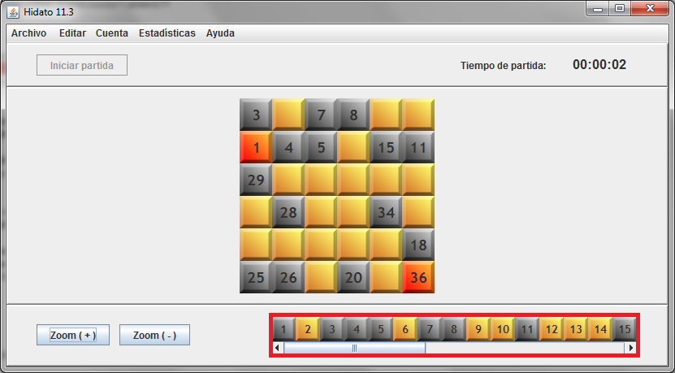

Vamos a explicar el funcionamiento de la barra de casillas, marcada en rojo en la siguiente imagen:

Esta barra refleja el estado de cada uno de los números que hay que colocar en el tablero. Si el número ya se ha colocado en alguna casilla, aparecerá en gris, en caso contrario, aparecerá en naranja.
Aparte de la función informativa, nos permite cambiar el número que queremos colocar. Haciendo clic en alguna casilla naranja de la barra y luego haciendo clic en alguna casilla vacía del tablero colocaremos el número que habíamos seleccionado.